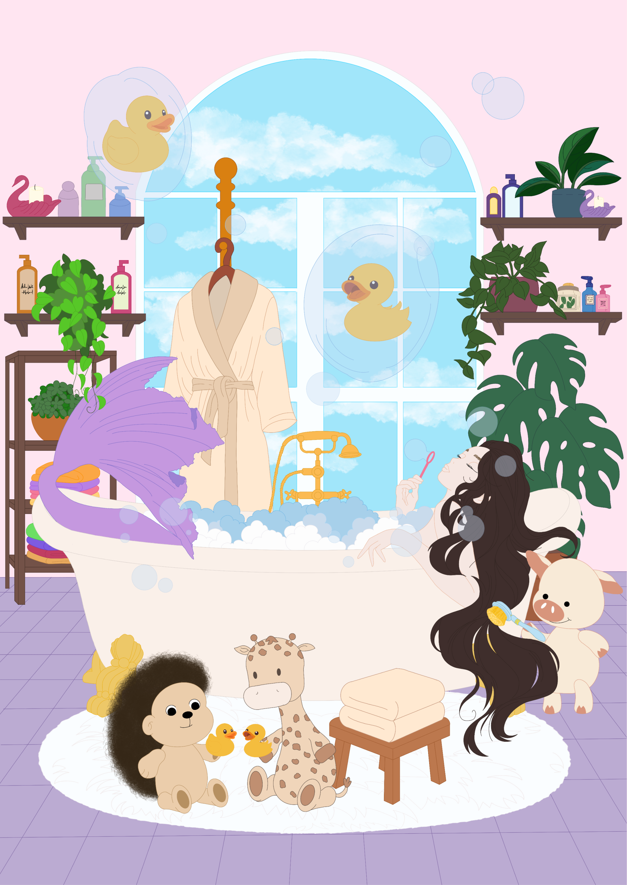
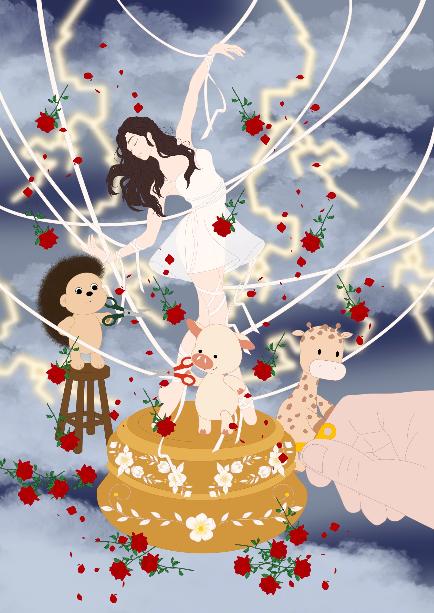
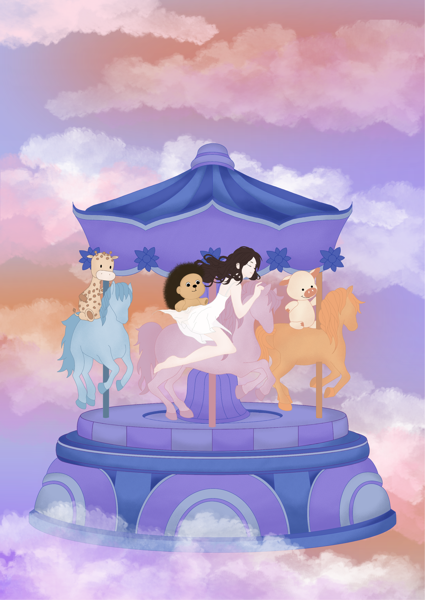
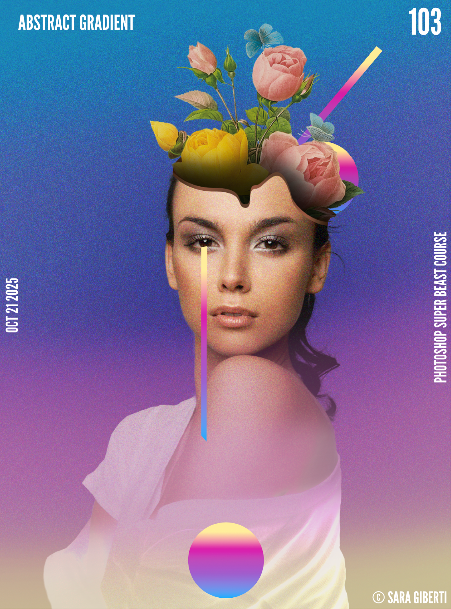
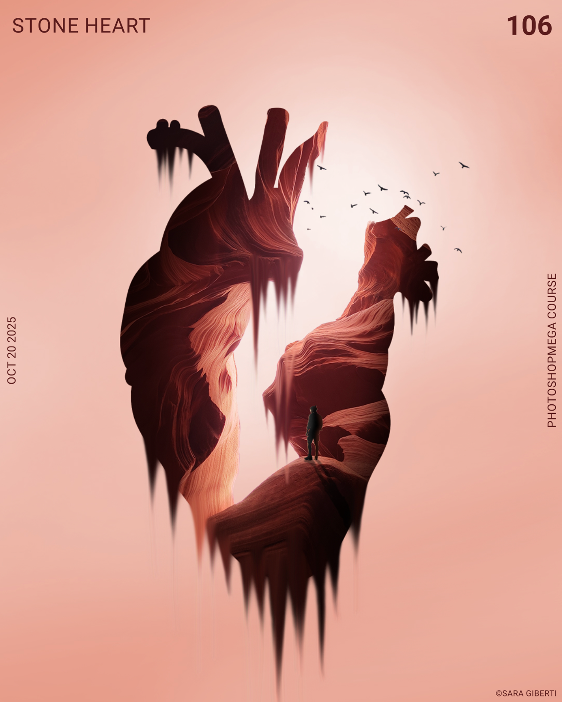
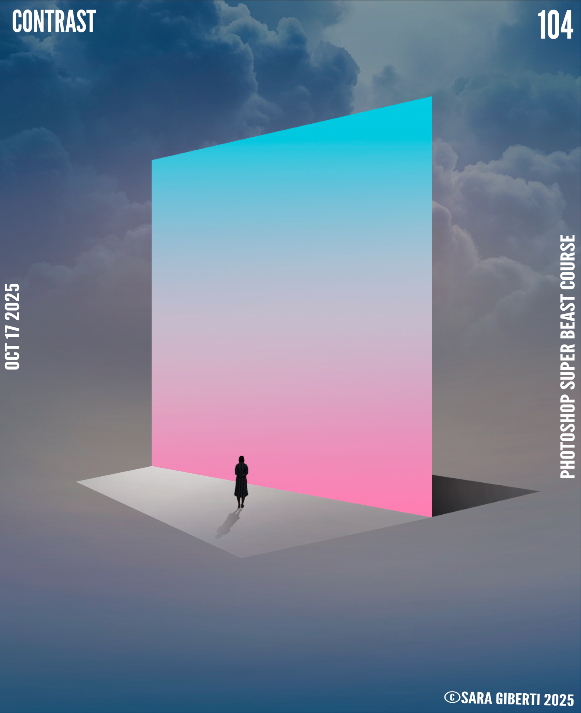
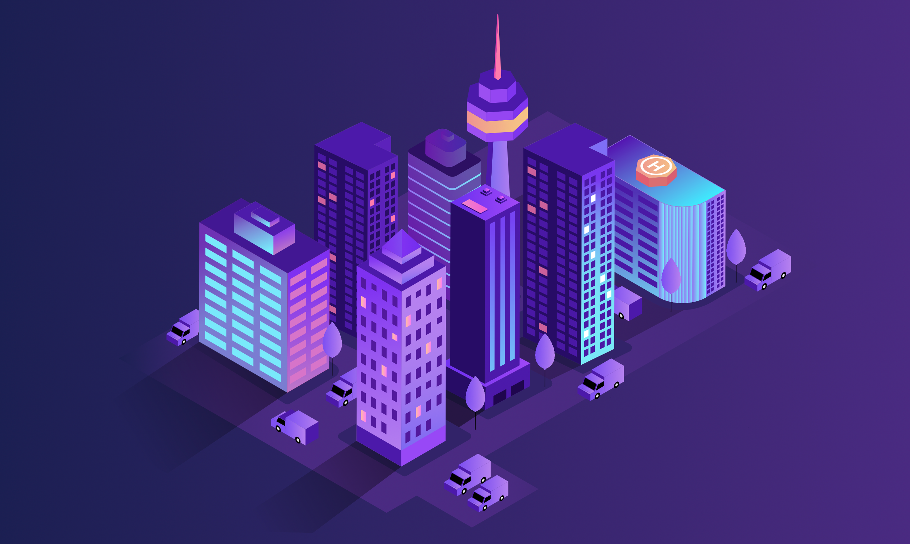

Illustrazioni
Attraverso l’illustrazione mostro agli altri il mio modo di vedere il mondo.
Mi ispiro al simbolismo: personaggi, ambienti e dettagli possono racchiudere significati che vanno oltre ciò che appare a prima vista. Amo studiare forme e colori e sperimentare con le tecniche digitali.
Leggera
Procreate · iPad
Attualmente sto lavorando al mio primo libro illustrato, il titolo sarà “Leggera”. Ogni illustrazione rappresenterà simbolicamente dei momenti nella vita della protagonista.

La sirena nella vasca
Dopo aver riconosciuto e accolto tutte le parti di sé, la ragazza si trasforma in una sirena. Nella vasca di casa, accanto ai peluche della sua infanzia, ritrova un luogo familiare in cui può finalmente essere se stessa.

Il carillon
Una ragazza è costretta a ballare seguendo i fili mossi dagli adulti, che vorrebbero farla diventare ciò che hanno immaginato per lei. I peluche della sua infanzia spezzano quei fili e la aiutano a scegliere chi essere.

La giostra tra le nuvole
Una giostra sospesa tra le nuvole racconta la vita che continua a muoversi e a cambiare.
Composizioni digitali
Adobe Photoshop
In questi lavori combino immagini, colori e fantasia per creare composizioni surreali e sperimentare con atmosfere diverse.

Abstract Gradient
Un ritratto che unisce elementi floreali e colori intensi.

Arizona Heart
Una reinterpretazione visiva del cuore anatomico.

Contrast
Una parete luminosa interrompe un paesaggio tra le nuvole.
Illustrazione vettoriale
Adobe Illustrator
In questi lavori combino immagini, colori e fantasia per creare composizioni surreali e sperimentare con atmosfere diverse.

Futuristic City
Una città isometrica costruita attraverso forme geometriche e dettagli architettonici.